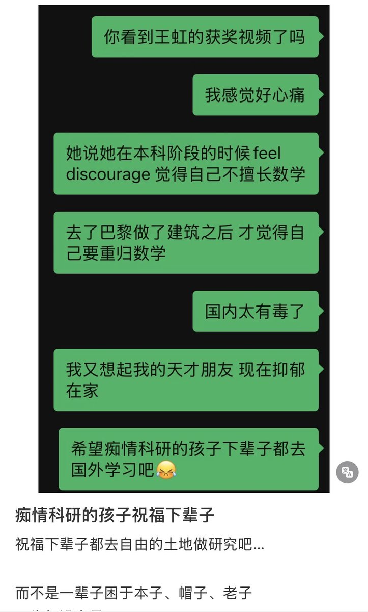

寒涟漪
@HANLIANYI331
@ukitheocog 如果她有过往的数学学习经历能够证明自己的数学天赋的话，我这里有渠道可以给她筹集申请国外大学的学费

Monsoon
@ukitheocog
其实我也认识一个数学天才, 20岁就在探索拓扑量子场论和形变量子化. 然而她因为心理原因无法在学校上学, 国内也没有有效的、靠成就认证学位的渠道. 所有学位必须通过修课和考试才能拿到. 她从学校退学以后找了一份微薄薪水的工作, 一边生活一边继续学习数学. 因为家境贫寒, 也无法支持她留学. https://t.co/K45cnAQ4vz